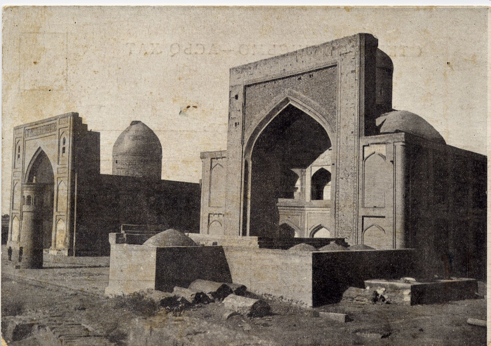
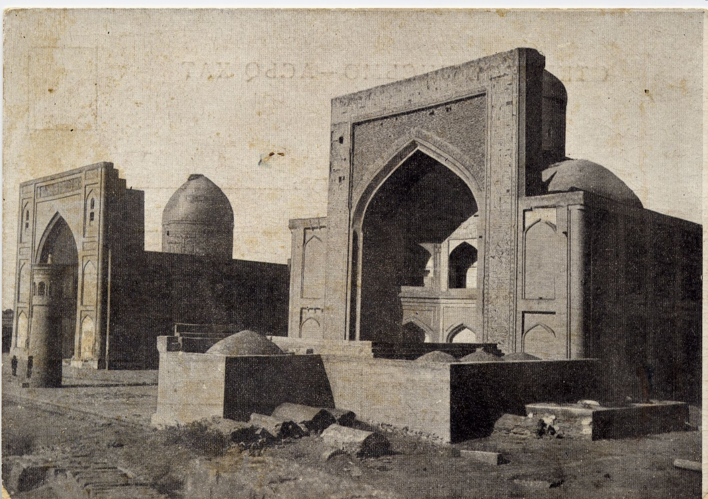

Туран был одним из древнейших центров мировой культуры. Народы Турана имели богатые традиции строительства и ремёсел. С принятием ислама местная культура впитала традиции других стран Арабского халифата и стала ещё более процветать. Политическая и экономическая среда в этот период истории положительно повлияли на развитие науки, строительства, сельского хозяйства, ремёсел и торговли невиданными ранее темпами. Мечеть Магоки Аттари. Бухара В IX–X веках большие достижения наблюдались в области архитектуры, особенно в строительстве мечетей и медресе. Путешественни- ки и учёные, посетившие наш край в то время, описывая города, упоминали мечети и медресе с величественными минаретами как основные достопримечательности. Наряду с культовыми сооружениями возводили ханака, мавзолеи учёных и святых. Из-за большого количества посетителей здесь были построены специальные помещения. До IX века в городах строили в основном из сырцового кирпича, а с экономическим развити- ем городов стали использовать обожжённые кирпичи.

Хорезмшах Абул Хасан Али ибн Маъмун уделял большое внимание науке и приглашал в свой дворец учёных. В 1004 году он основал в Гургандже научное учреждение, которое вошло в историю как Академия Маъмуна. Руководил академией Абу Райхан Беруни. Здесь занимался наукой и Абу Али ибн Сина. В Академии проводились глубокие исследования в области теологии и светских дисциплин, включая математику, геометрию, астрономию, физику, химию, минералогию, географию, картографию, естественные науки, медицину, философию, историю, арабский язык, логику, литературу, исламское право и др. Многие учёные в совершенстве владели арабским, персидским, греческим, латинским, тюркским языками, а также хинди. Они всесторонне изучали произведе- ния греческих учёных – Платона, Аристотеля, Птолемея, Евклида, Пифагора и Галена – и писали комментарии к их работам, высказывая новые идеи. В это время медресе и Академия в Гургандже стали настоящим центром науки, где можно было получить глубокие знания по астрономии у Беруни, по математике у Абу Насра и по химии у Абул Хайра Хаммара. Воспитанники этих учебных заведений впоследствии стали известными учёными Востока. Многие специалисты Академии Маъмуна были комментаторами трудов Мухаммада Мусы аль-Хорезми, последователями его научных традиций в разных областях науки.

В эпоху сельджуков создавались условия для развития науки и культуры. Члены правящей династии, будь то верховный правитель, шахзаде или малика, считали своим долгом построить одно или несколько медресе в городе. Визири, эмиры и местные правители следовали их примеру. Множество медресе построил в своё время Низам уль-мульк. Известно, что в багдадском медресе «Низамия», основанном знаменитым визирем, обучались 6000 учащихся. В медресе, где ведущие учёные преподавали как теологию, так и светские науки, были библиотеки с тысячами книг, обучающимся выдавали ежемесячные суммы на жизнь, обеспечивали жильём. В некоторых медресе были лечебницы. В частности, при медресе в Нишапуре был госпиталь. Медресе было домом для астрономов, математиков, врачей, химиков и великих поэтов, которые имели обширные знания по всем наукам своего времени. В 813 году наместник Мерва Маъмун стал халифом в Багдаде и пригласил с собой в столицу халифата лучших учёных Хорасана, Мавераннахра и Хорезма. Среди них был и знаменитый Мухаммад Муса аль-Хорезми.

ТУТ МОГЛИ БЫТЬ ВАШИ РАБОТЫ